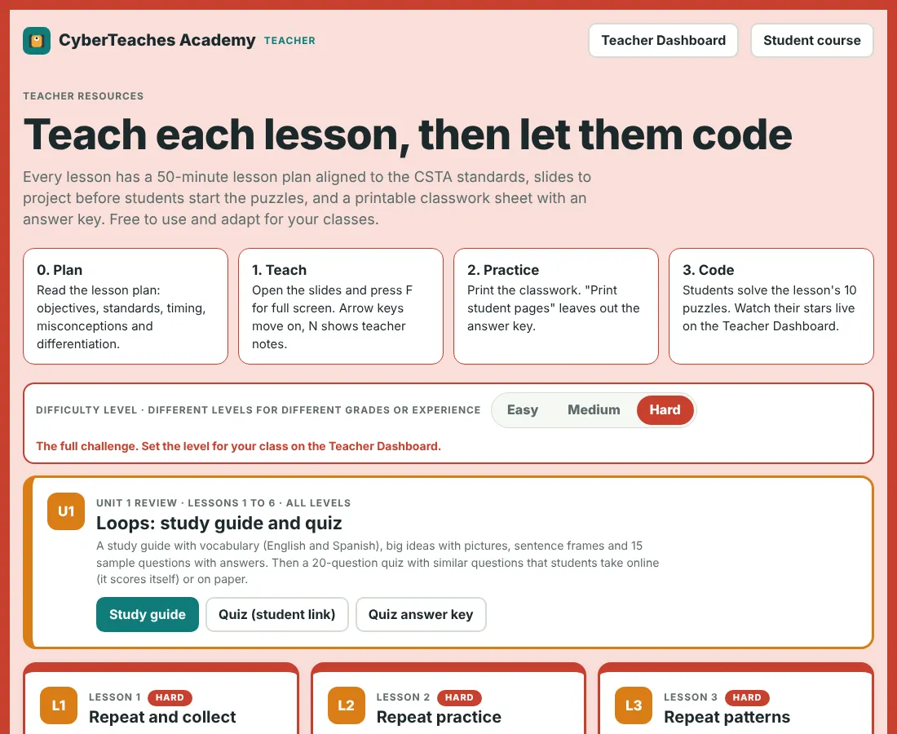

Career-ready computer science and cybersecurity pathways for your CTE program
Complete pathways from a first block-coding lesson to AP courses and CompTIA Security+ certification prep. Ready-to-teach lessons, hands-on labs and live progress data your teachers can use on day one. Free for schools and districts during early access.

Introductory, concentrator and capstone courses in every pathway
Each pathway follows the course sequence CTE programs already use, and fits the California Information and Communication Technologies (ICT) industry sector. Students can start in middle school and finish with an AP exam or an industry certification.
Cybersecurity
- IntroLearn cybersecurity basicsPhishing, passwords, safe devices
- ConcentratorAP Cybersecurity24 lessons · 11 labs
- CapstoneCompTIA Security+ prepSY0-801 · 27 lessons · 11 labs
Certification: CompTIA Security+
Software Development
- IntroRover Coding, then Python QuestBlock coding, then real Python
- ConcentratorApp Builder and AP CSPBuild and publish an app
- CapstoneAP Computer Science A (Java)53 lessons · 2 practice exams
Certification: Python PCEP Coming
Networking
- IntroAP CSP (Internet unit)How the Internet works
- ConcentratorAP Networking4 labs · 2 practice exams
- CapstoneCompTIA Network+ prepPlanned
Certifications: CompTIA Tech+ and Network+ Coming
Coding lesson plans already list CSTA computer science standards and WIDA English language development standards. A crosswalk to the California CTE Model Curriculum Standards for the ICT sector is in progress. Using another state's standards? Tell us in the pilot form.
Built for how CTE programs are measured
- Industry credential prep. Security+ prep is live now, with more CompTIA and Python credentials on the way. Credential attainment counts toward Perkins V program quality.
- Concentrator-ready sequences. Two or more courses in one pathway, mapped to introductory, concentrator and capstone levels.
- Progress data. Scores out of 100 for every student and lesson, unit quiz results and a CSV download from the Teacher Dashboard.
- Competition practice. Skills for SkillsUSA and FBLA cybersecurity and coding events, CyberPatriot and the Congressional App Challenge.
- Career connections. Every pathway leads to real jobs: security analyst, software developer, network technician and IT support.


Ready to teach, even for new CS teachers
- Lesson plans, slides and classwork for every coding lesson, with ELL supports and digital copies for Google Classroom.
- Different levels (Easy, Medium, Hard) for different grades, ages or experience.
- Auto-graded puzzles, labs and practice exams, so teachers spend time helping students, not grading.
- Games students ask for: Quiz Battle, Duels, Flag Race and class leaderboards.
Safe for students, simple for IT
No ads, no selling data
CyberTeaches shows no ads and never sells student information. Site analytics run with advertising features turned off.
No student email needed
Teachers can create a username and password for each student. Students can also sign in with a school Google account.
Only the teacher sees progress
A student's work is visible only to that student and their teacher. Runs in any browser, including Chromebooks, with nothing to install.
Built with FERPA and COPPA in mind. Need a data privacy agreement for your district? Ask in the pilot form.
Free during early access
Every course and tool is free right now. District plans with onboarding and support will come later, and pilot schools help shape them.
Teacher
Free
- All courses, labs and practice exams
- Lesson plans, slides and classwork
- Teacher Dashboard, class codes and student logins
- Quiz Battle, Duels and leaderboards
District pilot
Free during early access
- Everything in Teacher, for every CTE teacher
- Pathway setup that matches your course sequence
- Teacher onboarding session online
- Direct support from the course author
- Early say in district reports and Clever / ClassLink sign-in Coming
Request a free pilot for your school or district
Tell us about your CTE program. We will reply by email, usually within two school days, to set up classes and a short onboarding call.
- No cost and no contract
- Start with one teacher or a whole pathway
- California first, and every state is welcome
Frequently asked questions
Is CyberTeaches really free for districts?
Yes, during early access every course, lesson plan, lab and the Teacher Dashboard are free for schools and districts. District plans with onboarding and support may be offered later, and pilot schools will hear about them first.
Which CTE industry sector does it fit?
The pathways fit the California Information and Communication Technologies (ICT) sector: Software and Systems Development, Networking, and Information Support and Services. Schools in other states use the same introductory, concentrator and capstone sequence.
Which certifications do students prepare for?
The Security+ course prepares students for the CompTIA Security+ SY0-801 exam. Prep for CompTIA Tech+, Network+ and the Python Institute PCEP exam is planned. CyberTeaches is not affiliated with CompTIA or the Python Institute.
Can middle schools join a pathway?
Yes. Rover Coding and Python Quest are introductory courses that work in middle school, with Easy, Medium and Hard levels for different grades, ages or experience.
Do students need email accounts?
No. Teachers can create a username and password for each student, or students can sign in with a school Google account.
Does it work with Clever or Google Classroom?
Schools can add CyberTeaches as a link in the Clever Portal today, and digital classwork comes as Word files for Google Classroom. Clever and ClassLink single sign-on are on the roadmap.